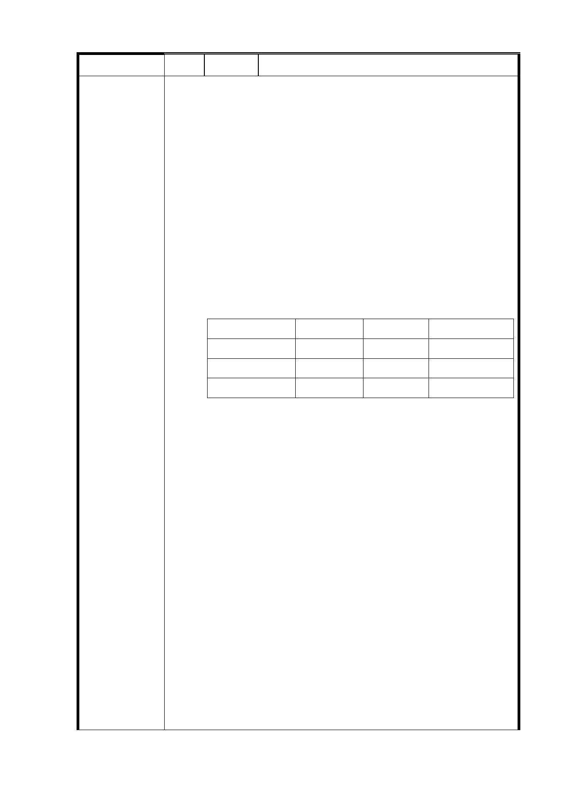

編 號 11 陳情人 葉○鳳
一、 廣慈園區變更為特定專用區（法定建蔽率40%法定容積
率400%），此變更案極不合理。
1. 本計畫區周邊土地大多屬於第三種住宅區法定容積
率 225%，市政府卻冒然在其中規劃了容積率 400%的
特定專用區，建築量體龐大，破壞了整個住宅區的寧
靜，也使土地分區使用的立法意義，喪失殆盡。
2. 規劃興建 2800 戶公營住宅，等於增加 2 個大仁里的
居民，也等於增加 28 條林口街 80 巷的居民，再加上
社福設施尚未公布的戶數，所產生的人口、就學、交
通、衛生、環境等問題對環境衝擊很大，這些問題與
衝擊柯市府應審慎評估。
3. 柏德 BOT 郝前市長 柯市長
公營住宅數量 526 戶
1500 戶 暴增為 2800 戶
全區平均容積 232％
322％
400％
陳情理由
市政府角色
監督者
開發者
開發者
市政府在廣慈 BOT 案時擔任監督者的角色，合約要求
柏德比照周邊第三種住宅區的容積率，廣慈 BOT 案解
約後，郝前市長和柯市長前後擔任開發者的角色，竟
不約而同的自行提高容積率。
4. 郝前市長和柯市長提高容積率和增加公營住宅數
量，都只是為了兌現政見，卻犧牲周邊居民的利益，
周邊居民成了政治的犧牲品。
5. 透過都市計畫變更提高容積率，表面上看起來一切合
法，但是用膝蓋想也知道，在住三的住宅區裏，設置
一個容積率 400%的特定專用區，這是典型的「只准州
官放火，不許百姓點燈」。
6. 這不就是「合法、不合理、社會觀感不佳」嗎？
二、 請柯市府不要為了兌現「四年兩萬戶公營住宅」的競
選政見，就罔顧我們的居住正義。建議特定專用區的
- 17 -